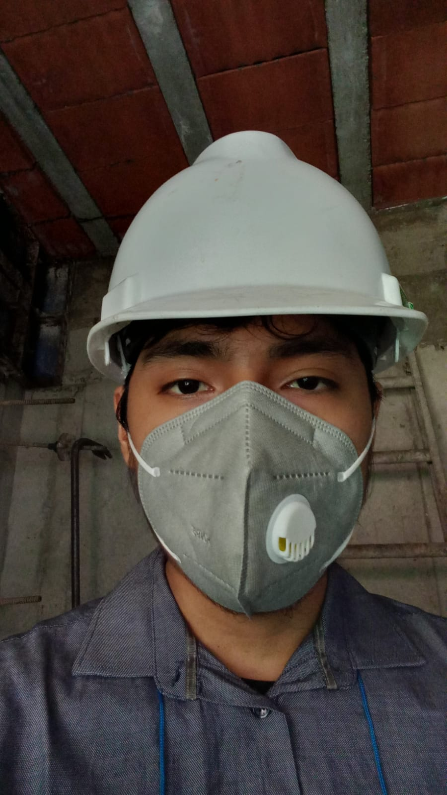

Selected Projects
Structural Design Automation
Automated structural workflows using Python, Dynamo, and APIs (ETABS, SAP2000, SAFE) to optimize engineering processes.
- Python
- Dynamo
- ETABS API
- Revit

AI-Based Urban Growth Monitoring
Semi-supervised deep learning model for detecting urban expansion using Sentinel-2 imagery and weak supervision strategies.
- Python
- PyTorch
- GeoAI
- Remote Sensing
SAR-Based Informal Settlement Detection
Machine learning approach using Sentinel-1 SAR data to detect informal settlements in high seismic risk areas.
- Sentinel-1
- SNAP
- GDAL
- Scikit-learn
About Me
Civil Engineer and AI researcher with experience in structural design and BIM automation,visual inspection of buildings, remote sensing, and seismic risk modeling. I develop computational tools that integrate machine learning, geospatial data, and engineering workflows to improve infrastructure design and decision-making.
Download CV